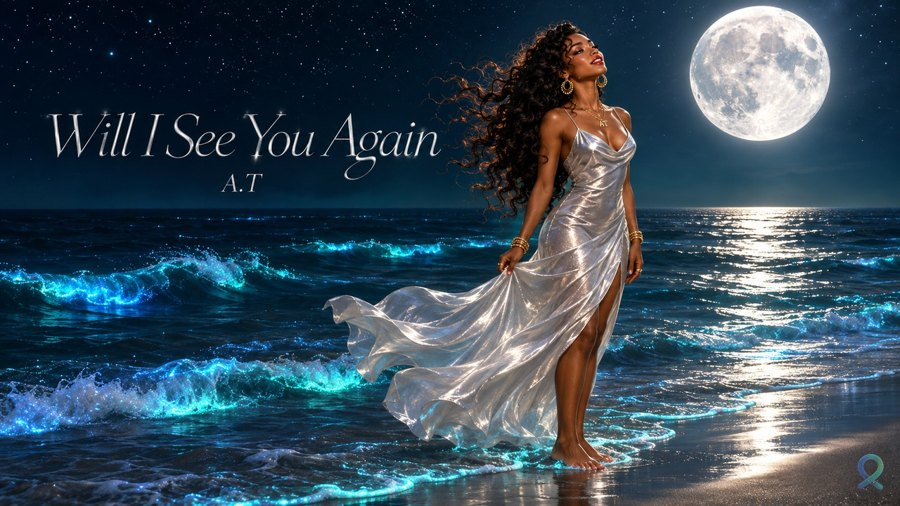

Track 07 · Heart On Pause
Will I See You Again
A.T.'s own version. A moonlit shoreline, a glowing tide, and one question she keeps asking the moon: will I see you again? A brand new beat, a brand new first verse, and the hook you already know.
 Watch the official video
Watch the official video
Lyrics
[Intro]
(Ooh, ooh, ooh)
(Mmm, will I see you again?)
(Ooh, ooh)
[Hook]
Will I see you again? (see you again)
When the clock stops runnin' and the night caves in
Under the same moon from a different end
Tell me, will I see you again?
Time keeps meltin' like it's made of rain (ooh)
Every shootin' star still carries your name
If the world keeps turnin', will you hold me then?
Tell me, will I see you again?
[Verse 1]
(Ooh, ooh, ahh)
(Mmm, mmm, ooh)
(Ahh, ahh, ooh)
(Mmm, ooh, ahh)
(Ooh, ooh, ahh)
(Mmm, mmm, ooh)
[Hook]
Will I see you again? (see you again)
When the clock stops runnin' and the night caves in
Under the same moon from a different end
Tell me, will I see you again?
Time keeps meltin' like it's made of rain (ooh)
Every shootin' star still carries your name
If the world keeps turnin', will you hold me then?
Tell me, will I see you again?
[Verse 2]
I been watchin' every clock, but I'm movin' slow
Got a couple things I felt that I never showed
Another text, another call, another "you up?" though
Another promise from a man that I already know
You ask me where I'm from, so I tell you the truth
Tell me 'bout your dreams, I been dreamin' 'bout you
But I done heard this story from a guy or two
And every time I let one in, I lose a little too
Somewhere in the passenger seat of your midnight drive
I been lookin' out the window tryna feel alive
Got a little bit of hope that I keep inside
But I can't tell if it's love or a pretty lie
And I don't wanna waste my time
When you barely makin' room for mine
Everybody say that love takes time
Well, I been waitin' on you half my life
[Hook]
Will I see you again? (see you again)
When the clock stops runnin' and the night caves in
Under the same moon from a different end
Tell me, will I see you again?
Time keeps meltin' like it's made of rain (ooh)
Every shootin' star still carries your name
If the world keeps turnin', will you hold me then?
Tell me, will I see you again?
[Bridge]
Same moon over you, same moon over me
Every hour's meltin', but you're all I see
If the time runs out before we ever begin
Promise me, promise me, I'll see you again
[Hook]
Will I see you again? (see you again)
When the clock stops runnin' and the night caves in
Under the same moon from a different end
Tell me, will I see you again?
Time keeps meltin' like it's made of rain (ooh)
Every shootin' star still carries your name
If the world keeps turnin', will you hold me then?
Tell me, will I see you again?
[Outro]
(Will I see you again?)
(Ooh, ooh)
(See you again)
Written by Grey Beard and A.T. ℗ & © 2026 Threadia AI, Inc. All rights reserved.